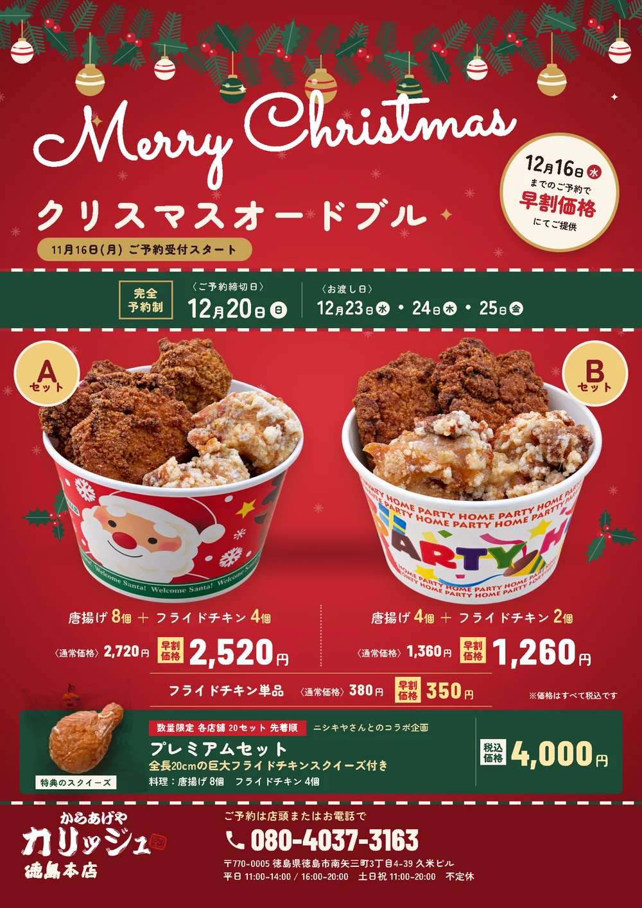
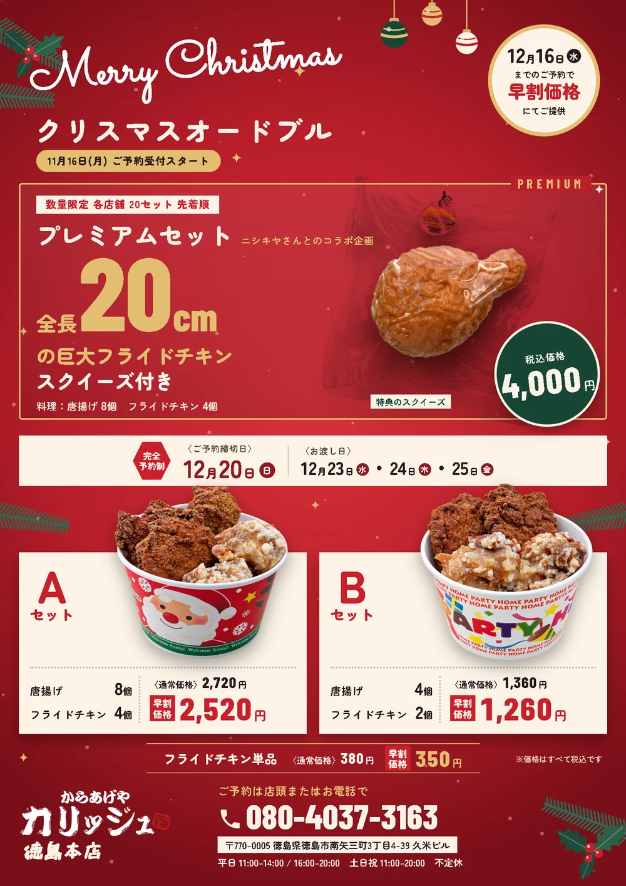
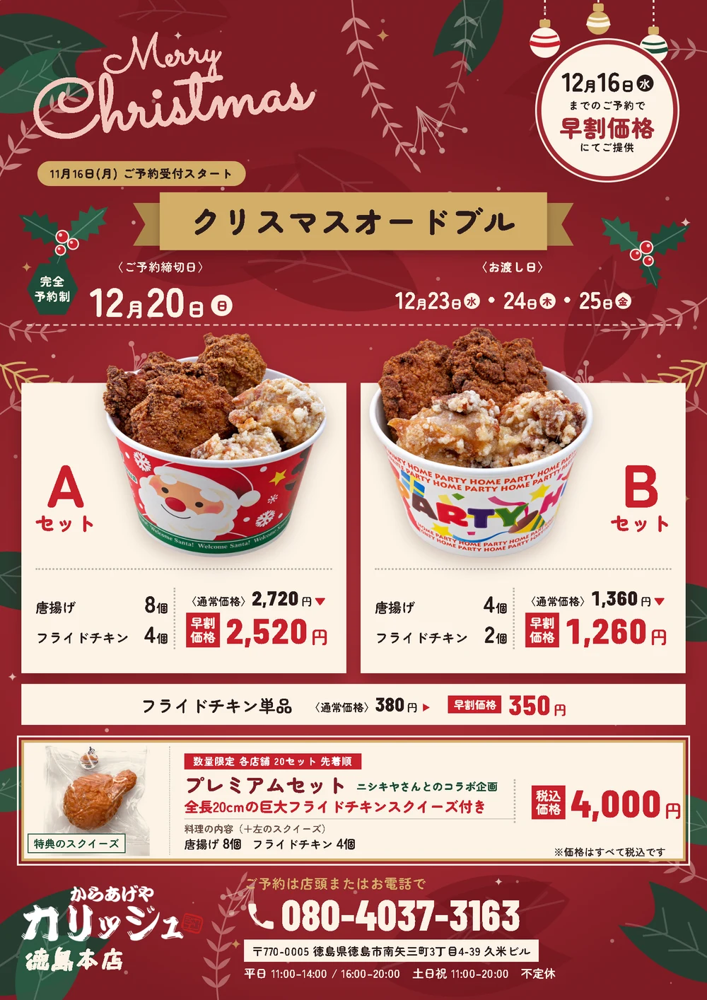
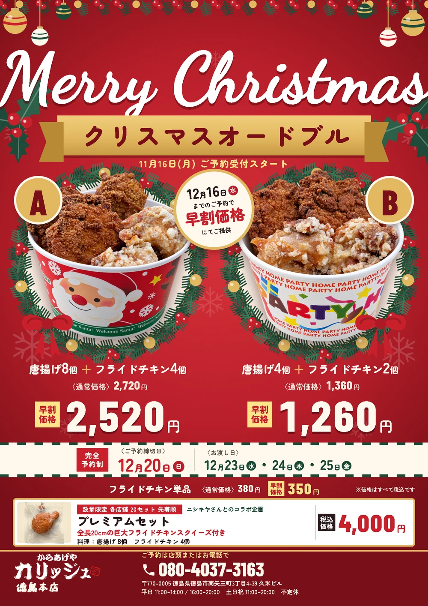
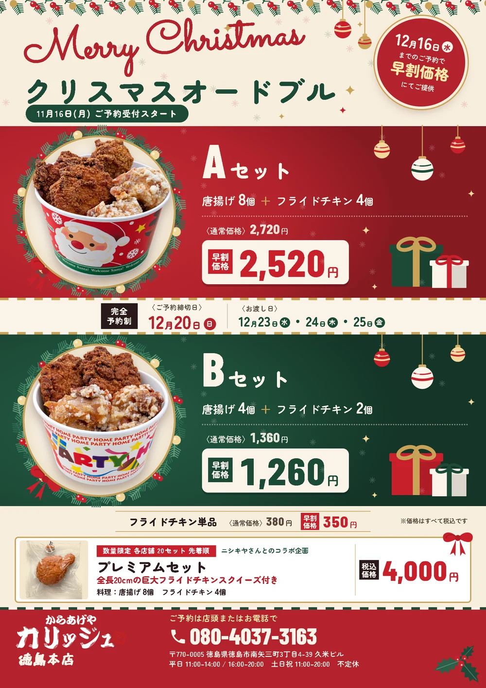
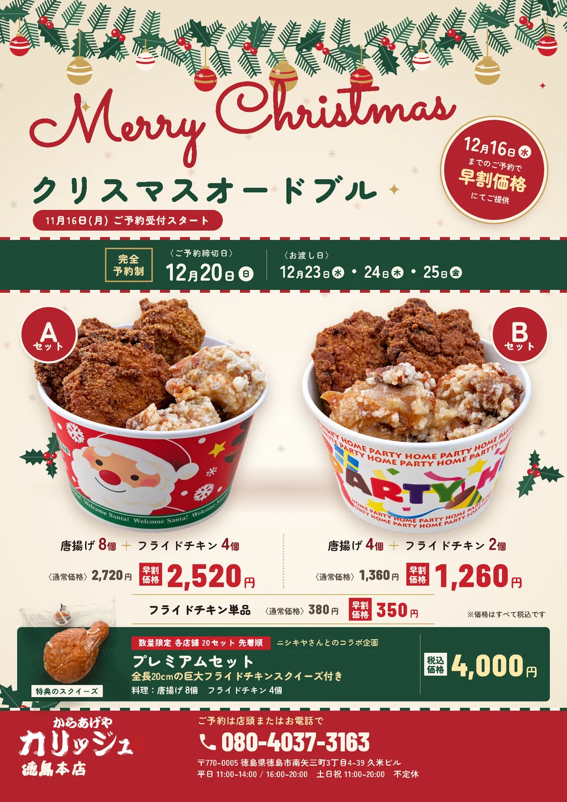
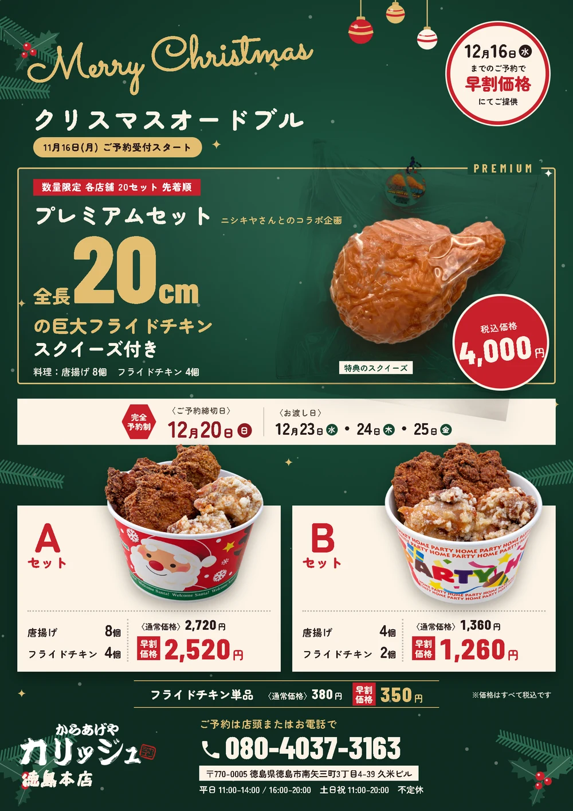

2赤クリスマスカードを赤に（新）
試作2の配置のまま、クリーム色の地を赤に変えた案。緑は日付の帯とプレミアムだけに残した。


3赤スクイーズで目を止めるを赤に（新）
試作3の配置のまま、深緑の地を赤に変えた案。緑はプレミアムの値段の丸だけに残した。


今今の案1
香川さんが選んだ案に、スクイーズの写真を入れた版。


5遠目で分かる赤（新）
細かい飾りをやめ、遠くからでも分かる大きな変化だけにした案。一面の赤い地に白い大きな Merry Christmas、A・Bの器は同じ大きさで大きなリースの中に置き、早割の値段を大きくした。


4赤と緑で上下に分ける
Aを赤、Bを緑の段にして上下に重ねた案。どちらも「左に器・右に中身と値段」の同じ形で、器の写真は2枚とも同じ大きさ。器のまわりにリース、上にガーランド、空いた所にオーナメントとプレゼントを飾った。


1大きな器ひとつ（ボツ）
10/29 ボツ。去年の投稿でいちばん効いていた「真ん中の大きな器」に戻した案。値段は箱をやめて吊り札に。Bの器は量に合わせてわざと小さくしている。

2クリスマスカード
赤い地を減らしてクリーム色に。上の飾りつけで華やかさを出し、AとBの器を同じ大きさで並べた案。


3スクイーズで目を止める
今年だけの話題（コラボ・全長20cm）を上に大きく置き、下でAとBを選んでもらう案。地は深緑。

